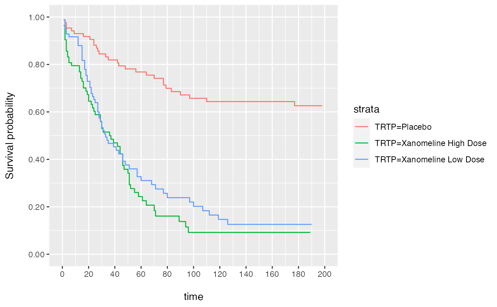
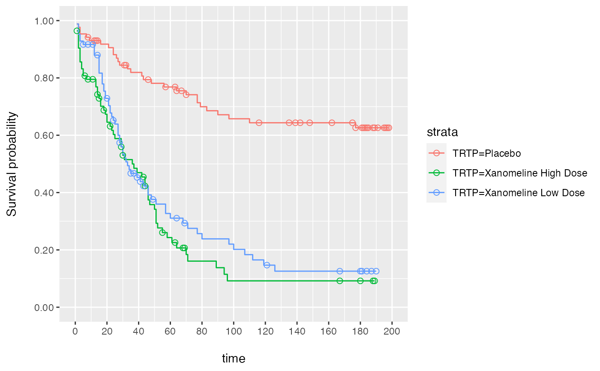
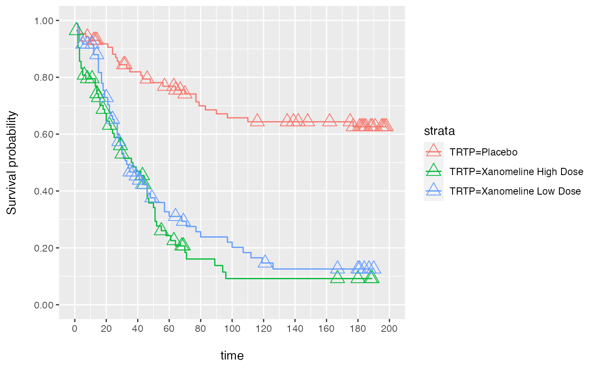
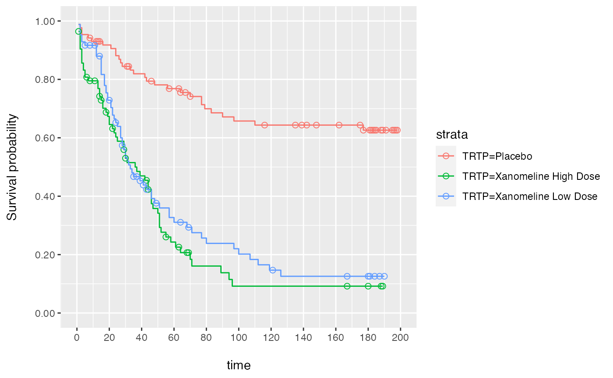
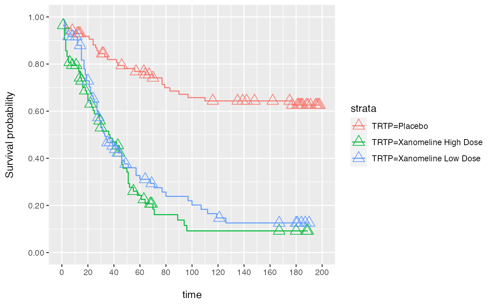

Add censoring symbols to a visR ggplot through an S3 method.
The S3 method is for adding censoring symbols to a visR ggplot.
The method is set up to use the pipe %>%.
No default method is available at the moment.
Usage
add_CNSR(gg, ...)
# S3 method for ggsurvfit
add_CNSR(gg, shape = 3, size = 2, ...)
# S3 method for ggtidycuminc
add_CNSR(gg, shape = 3, size = 2, ...)Arguments
- gg
A ggplot created with visR
- ...
other arguments passed on to the method to modify
geom_point- shape
aesthetic of ggplot2
geom_point. Default is 3.- size
aesthetic of ggplot2
geom_point. Default is 2.
Examples
library(visR)
# Estimate KM curves by treatment group
survfit_object <- survival::survfit(data = adtte, survival::Surv(AVAL, 1 - CNSR) ~ TRTP)
## plot without confidence intervals
p <- visR::visr(survfit_object)
p

# add censoring to plot
p %>% visR::add_CNSR()
 # change censor symbol shape
p %>% visR::add_CNSR(shape = 1)

# change size and shape
p %>% visR::add_CNSR(size = 4, shape = 2)

# change censor symbol shape
p %>% visR::add_CNSR(shape = 1)

# change size and shape
p %>% visR::add_CNSR(size = 4, shape = 2)
